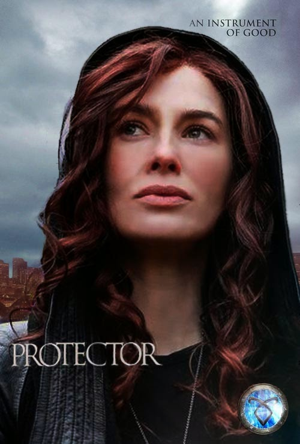

ShadowHunters-The Mortal Instruments
The City of Lost Souls

Jace has vanished after being possessed by a demonic bond with Sebastian Morgenstern, Clary's ruthless brother. Under Sebastian's influence, Jace is no longer himself, and the Shadowhunters are desperate to break their connection.
Clary infiltrates Sebastian's circle to save Jace, risking her life while unraveling his malevolent plans to raise an army of dark Shadowhunters. Meanwhile, Simon, Isabelle, Alec, and Magnus team up to find a way to sever the bond, relying on dangerous magic and forbidden resources.
The story delves into themes of love, loyalty, and sacrifice as the characters face their fears and test the limits of their bonds. Clary must make tough choices as she struggles with her feelings for Jace while battling the growing threat Sebastian poses to the Shadow World.
The novel balances intense action, emotional depth, and shocking revelations, keeping readers hooked. It's a pivotal installment that builds anticipation for the final showdown in the series.
The City of Heavenly Fire
Sebastian Morgenstern, Clary’s evil brother, wages war on the Shadowhunters using the Infernal Cup to corrupt Shadowhunters and turn them into his followers. He launches devastating attacks on institutes worldwide, forcing the Shadowhunters to retreat to Idris. Clary, Jace, Simon, Isabelle, and Alec take matters into their own hands by venturing into Edom, the demon realm, to stop Sebastian.
In Edom, Clary faces a crucial decision—whether to use a powerful weapon against Sebastian, knowing it could have dire consequences. Ultimately, she uses her special rune ability to destroy the Infernal Cup and end Sebastian’s reign. This act purges Sebastian of his evil nature briefly before he dies, showing the person he could have been without Valentine’s influence.The book ends with Simon sacrificing his memories of the Shadowhunter world to save his friends. However, his connection to Clary and the group is later restored, and the Shadowhunters begin rebuilding their lives. Clary and Jace finally embrace their love without the looming shadows of war.